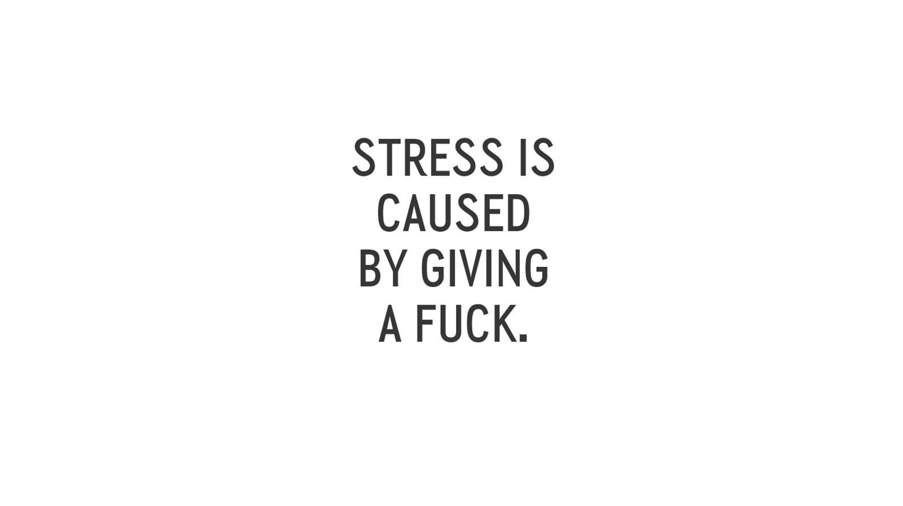

ABOUT US
There is literally Nothing About Us.
But this thing seems pretty dope ...

ABOUT US
There is literally Nothing About Us.
But this thing seems pretty dope ...
What Exactly It Is ??
Hello to the one reading this,
The project is a simple NoEmbarrasment Application that is developed using
JavaScript ES2015/ES6 Syntax, in support for the people at
TheOldTravellerNetwork (TOTN).
Since I too am a Student of CSE Department, I know how it feels when
you get a silly doubt about something and that doubt kills you all the
time. And because of that doubt you might not follow the entire stuff that
might have been taught by the teacher.
What stops the people from asking the doubts ???
For me it was something like, If I ask this doubt and what if the doubt is
a very silly one. People might judge me for the rest of the year !!!
So, this is a supporter application for all those who get silly doubts during the sessions.
HOW IT WORKS ???
Just open the page ! Type your doubt in the inbox. And hit Send/Enter.
You will be anonymous. No one knows who asked the doubt. But you will be answered !!
SOUNDS TOO GOOD RIGHT ??
You can contact TheOldTraveller if you want to know more about it !!
MAIL : oldtraveller7@gmail.com